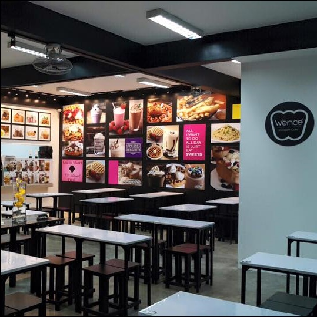
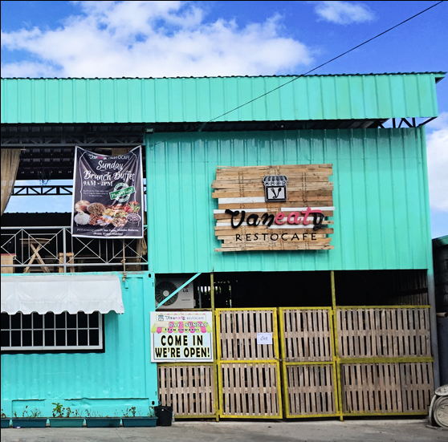
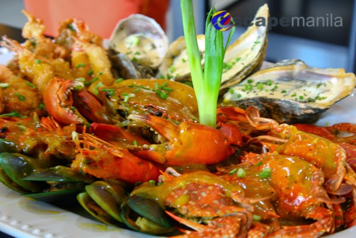
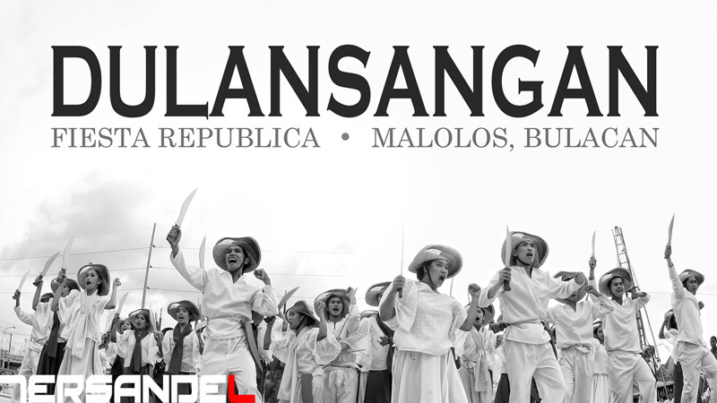

LET'S EAT
Café26
11 Sapphire St., Capitol View Park, Malolos, Bulacan
Hours: Open today · 10AM–10PM

Wencé
621 Manila N Rd, Guiguinto, Bulacan
Hours: Open today · 10AM–10PM

Little Chalet
Robinsons Place Malolos, Manila N Rd, Bulacan
Hours: Open today · 10AM–9PM

Vanety Restocafe
PTT Gasoline Station, Km. 38 Mac Arthur Hi-Way, Malolos, 3000 Bulacan Hours: Open today · 11AM–10PM
EVENT
MALOLOS MUSIC FESTIVAL 2016
Get soaked and paint the sky with no limits! Malolos Music Festival (Malo Fest) is a first of its kind event in Malolos, Bulacan. It envisions a music performance of local bands that will bring together three eras of generation: the 80’s, 90’s and the millennials through pop, alternative and rock music. Support our local bands and DJ’s as we celebrate music with foam, holi powder and water!
NEWS
Japan Plans P110B Loan for Malolos-Tutuban Railway Project
Ohtaka said that the Philippines is “a very important partner” of Japan and that “prosperity in the Philippines is very important.” “We sympathize with the Filipinos, that this is a project that needs to be done very quickly,” he added.
BULACAN STATE UNIVERSITY
Santiago to youth: Help end culture of corruption
MALOLOS, Bulacan — Presidential candidate Senator Miriam Defensor-Santiago on Monday called on new graduates to help end the culture of corruption.

RESTAURANT
Restaurants in Bulacan : Bistro Maloleño in Malolos
About an hour drive from Manila, the City of Malolos in the province of Bulacan is famous for its rich history and cultural heritage.
ANTICIPATED EVENTS

VAMOS A MALOLOS:
Celebrating the History of the Filipino People

SINGKABAN

DULANSANGAN
HISTORY
Malolos, once the capital of the short-lived First Philippine Republic, is linked to many patriots and heroes in the country's history. Names such as General Emilio Aguinaldo, Pedro A. Paterno, Dr. José P. Rizal, Marcelo H. del Pilar, Pío del Pilar, Gregorio del Pilar, Apolinario Mabini, Antonio Luna, Felipe Calderón, General Isidro D. Torres and many others are forever engraved and enshrined in the annals of Philippine history, all of whom share one commonality.Malolos, officially the City of Malolos (Filipino: Lungsod ng Malolos; Kapampangan: Lakanbalen ning Malolos), is a first class[citation needed] urban component city in the Philippines. Malolos is considered as the 115th city in the country.[4] It is the capital city of the province of Bulacan as the seat of the provincial government.